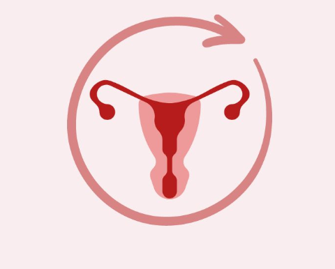

Description: Menstruation (commonly called a period) is the natural, monthly shedding of the uterine lining (endometrium) in individuals with a female reproductive system. It occurs when a pregnancy has not taken place, causing hormone levels to drop and the body to expel the thickened lining and blood through the vagina. This process typically lasts between 3 to 7 days and is a key part of the menstrual cycle.
Cycle Length: Typically 21–35 days, with bleeding lasting 2–7 days.
Phases: Menstrual, Follicular, Ovulation, and Luteal phases.
Symptoms: Cramps, bloating, mood changes, breast tenderness, fatigue, lower back pain.
Premenstrual Syndrome (PMS): Mood swings, Anxiety, Food Cravings, Brain Fog, Sleep Disturbances.
Management: Pain relievers, heat pads, hormonal contraceptives, proper nutrition and rest.
When to See a Doctor: While menstruation is a natural biological process, seeking medical advice is essential when symptoms disrupt daily life or fall outside healthy parameters. Key indicators for a doctor’s visit include abnormal bleeding, such as soaking through a menstrual product every hour or periods lasting longer than seven days, and irregular cycles that occur more frequently than 21 days or further apart than 35 days. Furthermore, debilitating pain that does not respond to standard medication can signal underlying conditions like endometriosis or fibroids. Monitoring these "red flags" ensures that hormonal imbalances or reproductive health issues are addressed early, shifting the experience from one of endurance to one of proactive health management.
Tips: Track your cycle, stay hydrated, exercise lightly, and maintain a balanced diet.